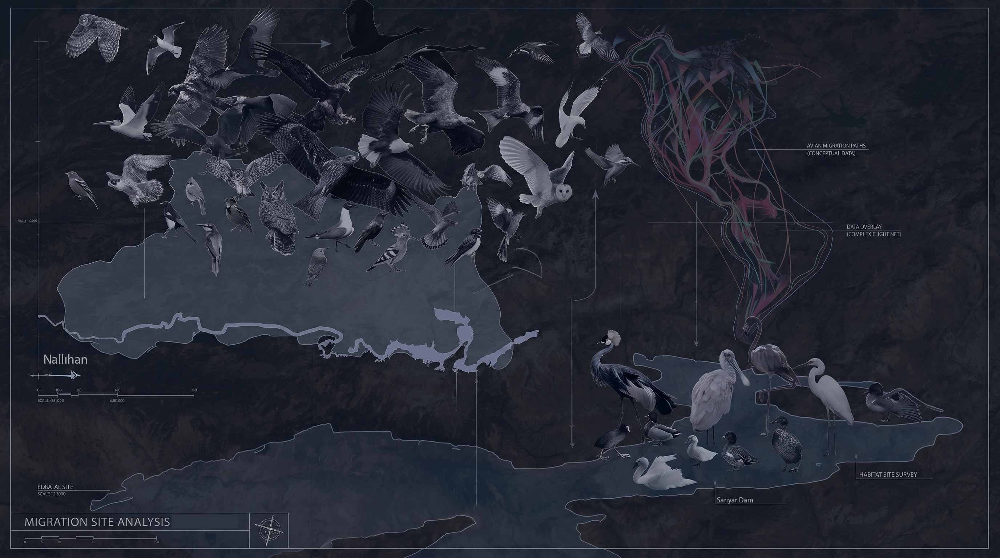

Centered on the Nallıhan Bird Sanctuary and the Sarıyar Dam reservoir, this mapping analyzes how industrial landscapes intersect with non-human geographies. The local microclimatic shifts and atmospheric conditions induced by the Çayırhan Thermal Power Plant do not just contaminate the immediate site; they act as an active airborne barrier, forcing an intervention into the region’s traditional flyways. By overlaying spatial infrastructure data with habitat surveys, this section charts the transition from a historic avian refuge to a highly fragmented, deviated flight network. The resulting map visualizes how ecological migration paths are physically rewritten by subsurface and atmospheric industrial presence.
Ayaş, Z. Nest Site Characteristics and Nest Densities of Ardeids (Night Heron: Nycticorax nycticorax, Grey Heron: Ardea cinerea, and Little Egret: Egretta garzetta) in Nallıhan Bird Sanctuary. TÜBİTAK Turkish Journal of Zoology.
Perktaş, U., & Ayaş, Z. (2005). The Bird Species of Nallıhan Bird Sanctuary (Ankara, Turkey). Journal of the Black Sea/Mediterranean Environment, 11(2).
Sutherland, W. J. (1998). Evidence for Flexibility and Regional Deviation in Avian Migration Routes. Journal of Avian Biology. / Richardson, W. J. (1998). Bird migration and power plants: Atmospheric and spatial disruptions. Environmental Management.